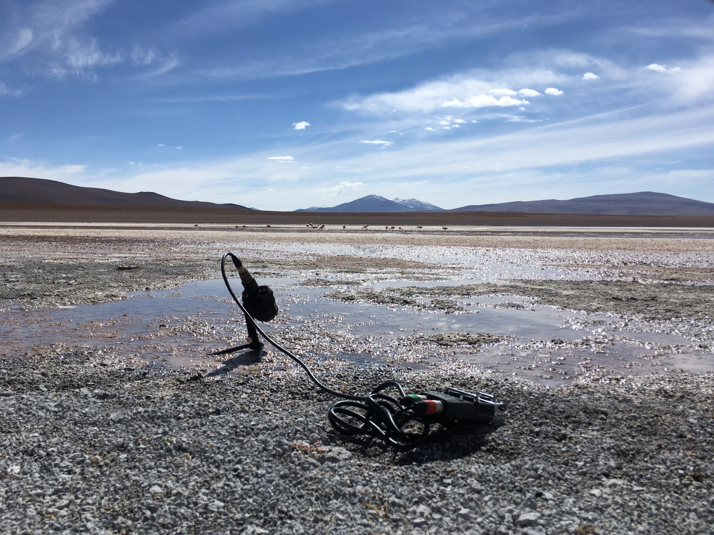

own voices (2019)
sound sculpture
25cm x 50cm x 50cm. Acrylic Box, Styrofoam landscape, projector, custom software, electronics.
Audio feedback typically arises among the close proximity of a sound source and an amplification source, resulting in a looping effect. Language as a whole examples feedback loops; whereby the information emitted by the soundscape finds itself reiterated through the onomatopoeic faculty found across language.
In this piece auditory feedback is used as both a literal and metaphorical tool. Soundscapes recorded at the Laguna Colorada in the Reserva Nacional de Fauna Andina Eduardo Avaroa are superimposed beneath recordings of terms relating to this particular terrain in spoken Quechua, the precolonial language of the central Andes. The English text seen on far façade is the live translation of these terms.
The mechanics of the feedback system used in this piece strips the two sonic elements of their sonic nuances and inadvertently mixes them, creating an alternative soundscape made where the boundaries between language and soundscape become increasingly blurred over time, a nod to the ultimately onomatopoeic essence of language suggested in Plato’s Cratylus.
The decision to focus on Quechua and the Central Andes region was not an arbitrary one. To consider the existence of a tangible connection between language and location demands the consideration of a language where lexicon is local. Despite the culture’s interaction with colonial powers, Quechua remains at roughly 8 million speakers across Bolivia, Peru, Ecuador, Colombia and Argentina.